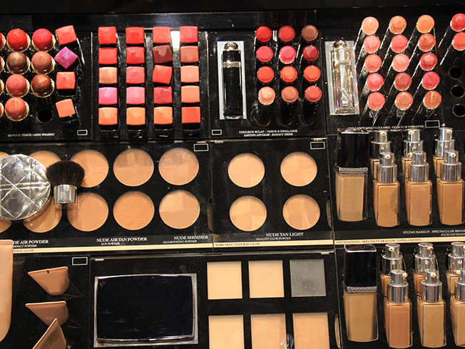

Accesorios
|
Los artículos más vendidos, son un buen punto de partida a la hora de elegir, ya que normalmente
es una señal de calidad. Ya sea porque es alguna cosa para ti mismo, o para realizar un regalo a
alguien, en estas listas encontrarás los artículos que más han gustado a la mayor parte de usuarios,
que compran en las tiendas online. Nuestro programa especializado en encontrar lo más vendido en
Internet, nos garantiza actualizar estas listas constantemente, para que las consultes cuando vayas
a comprar on-line ¡Te deseamos una buena compra!
|
Los productos top ventas, suelen ser los que más duran, los más solicitados, una apuesta segura.
Ya sea porque está de moda, por su calidad o porque tiene un buen precio, en el catálogo de más
vendidos encontrarás los mejores productos de higiene actuales.
|
 |
 |